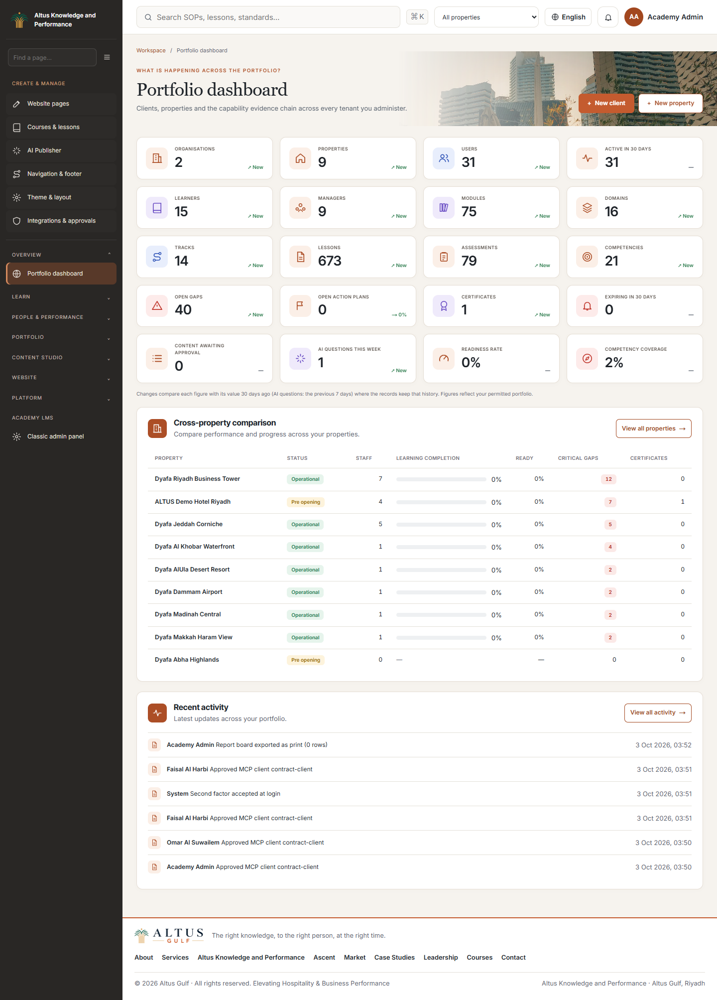

altus Hospitality Knowledge & Performance (HK&P)
Mobile connection and role training — October 2026
Mobile app settings is visible in the native Platform menu and the legacy admin sidebar at /hkp/admin/mobile. A system-scoped account with settings.view is required; updates/key management also require settings.update. The app exposes Settings → Server setup and Personal API key, as well as Get my personal API key on Sign in. Admin and app screens provide real Test connection controls.
The local mobile .env is configured with http://localhost/atlas/atlas and a native-generated altm_ configuration key. For a USB-connected Android device run adb reverse tcp:80 tcp:80. Each user creates an own ha_ mobile key in Account Security after password/2FA confirmation and enters it in Connect account; it expires after 90 days and does not grant extra permissions. Personal keys never belong in build environment variables. Production needs the deployed site's own URL and key.
The role recordings use actual local browser screens with English synthetic narration and isolated sample accounts. The inventory distinguishes live-supported mobile routes from demonstration-only options. No production deployment, iOS release or physical-device acceptance is implied.
Admin Studio — October 2026
The existing application now includes a redesigned ALTUS admin workspace, grouped/collapsible sidebar, searchable page palette, bilingual catalogue editors, private live website drafts, editable navigation/footer, and document publishing for courses, website pages, articles, SOPs and hospitality topics. Text, scanned and mixed PDFs use local English/Arabic OCR and background jobs. Generate editable modules, lessons and quizzes using your configured AI provider. Created content remains unpublished until reviewed through the existing publishing workflow.
| Start here | Local URL / guide |
|---|
| Admin dashboard | <http://localhost/atlas/atlas/hkp/admin> |
| Content Studio | <http://localhost/atlas/atlas/hkp/cms/studio> |
| AI Document Publisher | <http://localhost/atlas/atlas/hkp/cms/publisher> |
| Website pages and live editor | <http://localhost/atlas/atlas/hkp/cms> |
| Theme and global site settings | <http://localhost/atlas/atlas/hkp/cms/theme> |
| Revision history | <http://localhost/atlas/atlas/hkp/studio/revisions> |
| Navigation and footer | <http://localhost/atlas/atlas/hkp/cms/navigation> |
| Install / upgrade / PDF dependencies | ADMIN_INSTALL.md |
| Daily admin workflows and screenshots | ADMIN_GUIDE.md |
| Feature matrix and implementation details | ADMIN_FEATURES.md |
| Executed tests and configuration-dependent checks | Acceptance report |
| MCP integrations, approvals, health, audit | <http://localhost/atlas/atlas/hkp/cms/integrations> · daily workflows |
| MCP gateway install, OAuth clients, secrets, deploy, rollback | MCP_GATEWAY_RUNBOOK.md |
Native publisher API reference (/api/publisher/v1) | PUBLISHER_API.md |
This is a native CodeIgniter implementation. Remote MCP access is provided by a separate Node 24 gateway (mcp-gateway/, official MCP SDK, Streamable HTTP, OAuth with PKCE via oidc-provider) that calls the native /api/publisher/v1 with short-lived delegated credentials; it is off unless ALTUS_MCP_ENABLED=1. No WordPress plugin is part of this release. Existing authentication, tenancy, learning records and LMS services remain authoritative.
Set-Location C:/laragon/www/atlas/atlas/mcp-gateway
npm.cmd ci
npm.cmd run build
npm.cmd test # Node 24 (.nvmrc)
Quick upgrade, after verifying the local database override and making a database backup:
Set-Location C:/laragon/www/atlas/atlas
$altusPhp = 'C:/laragon/bin/php/php-8.1.10-Win32-vs16-x64/php.exe'
& $altusPhp index.php ha_cli migrate
& C:/Python313/python.exe -m pip install -r tools/publisher-requirements.txt
The local database has the Admin Studio and publisher migrations (25, 26, 27, 29 and 30) applied. Sign in with your existing platform admin account. Configure an approved provider/model in /ha_ai/providers before generating AI drafts. Uploaded documents need the extraction worker: php index.php publisher_cli daemon, or schedule publisher_cli work 25 every minute. publisher_cli health reports dependency/provider/worker setup. See the installation guide for Tesseract English/Arabic data, executable paths, upload limits and isolated testing. Open Integrations ? Connection health, copy the MCP URL and follow the linked gateway runbook to connect a client.

The documentation below describes the wider existing application; the linked Admin Studio guides describe this update.
altus HK&P is a bilingual (Arabic / English) hospitality capability platform for
Altus Advisory. It runs inside the Academy LMS CodeIgniter application.
It does more than host courses. It proves whether each employee can do the job:
role requirements lead to learning, then theory and practical assessment, then
competency, gaps, corrective action, reassessment, readiness, certification and
KPIs. Every step is scoped to its tenant and recorded in the audit log.
| URL (local) |
|---|
| Workspace (learners, managers, Altus team, executives) | <http://localhost/atlas/atlas/hkp> |
| Website + page builder | <http://localhost/atlas/atlas/hkp/cms> |
| Modules & lessons CMS | <http://localhost/atlas/atlas/hkp/cms/modules> |
| Legacy LMS admin panel | <http://localhost/atlas/atlas/admin> |
| Public site | <http://localhost/atlas/atlas/en> · <http://localhost/atlas/atlas/ar> |
| Altus corporate page | <http://localhost/atlas/atlas/en/altus> |
| Certificate verification | <http://localhost/atlas/atlas/verify> |
| phpMyAdmin | <http://localhost/phpmyadmin> (user root, no password) |
Related documents:
- gap.md: the 190-section specification against what is built, and the issues fixed.
- IMPLEMENTATION_STATUS.md: status per area, with the tests behind each claim.
- DEPLOYMENT.md: server checks and debugging a 500 error after upload.
---
Sign in
Use your own existing account. Ask the administrator to provision access; local fixture credentials are omitted from this public training copy.
2. What the platform does
Learner: *My workspace*
- A dashboard that answers "what should I do next?". It shows assigned learning, due dates, the readiness status and why, open action plans and certificates.
- My learning:
- modules and tracks built from the learner's role requirements
- bilingual lessons with video, PDF, slides, audio and transcripts
- resume from the last position
- drip release
- Knowledge: approved SOPs, policies and checklists, with acknowledgement.
- Smart search across knowledge and lessons that the learner is allowed to see. Arabic and English queries find each other's sources.
- AI assistant: answers only from approved content, with citations. If the content does not cover a question, it says so.
- Assessments: theory papers, plus practical assessments that the learner can view.
- Competency profile, readiness explanation, action plans with evidence upload, and certificates with QR verification.
Property management: GM, department head, supervisor, training manager
- Team dashboard, people list and each employee's full evidence record.
- Assign learning to people, job roles, departments or cohorts, with due dates and exemptions.
- Assessor queue: weighted practical rubrics, where a critical criterion caps the result.
- Gap heatmap, action plans (assign, review, approve evidence) and reassessment.
- Readiness heatmap, and opening readiness for a pre-opening team.
- Certification, quality audits (internal, brand, mystery guest, safety and SOP compliance), KPIs and reports (CSV and XLSX).
- Branding for the property: logo, colours and name, applied instantly.
Altus team: *Administration*
- A portfolio dashboard across all clients and properties.
- Records for organisations, properties, departments, job roles, users and roles, with 16 roles.
- Curriculum: 16 professional domains (10 core), tracks and drag-ordered modules.
- Content review: draft → internal approval → quality approval → publish, with versions and a diff view. Authors cannot approve their own work.
- Assessments and question bank, the competency library and role-to-competency matrix, and rubrics.
- Readiness policies and certification programmes.
- AI governance: index status, the query log and citation checks.
- Engagements (the ASCENT stages DISCOVER → SCALE), and frameworks: Altus Performance Matrix™, GOPPAR Value Stack™, ESG and the capability model.
- Corporate CMS (services, sectors, case studies, leadership and partners), imports with preview and rollback, the audit log and system health.
Executive
- An executive overview and a printable board report.
Website and content CMS (this release)
- A page builder with 13 section types: hero, text, image + text, image, gallery, cards, key figures, FAQ, steps, call to action, video, quote and sanitised HTML.
- Drag sections to reorder. You can also edit, hide, duplicate or delete them. Each section has English and Arabic content.
- Every save keeps a revision that you can restore.
- SEO / AEO / GEO score per language, from 26 checks, each with a fix:
- meta title and description, focus keyword, heading and intro, content depth, alt text, internal links and hreflang pairing
- question headings, FAQ pairs and direct answers
- entity, facts, sources, schema type, region and place, and coordinates
- FAQ sections produce FAQPage schema automatically, and region/place produce Place / LocalBusiness schema
- lesson content from text, YouTube, Vimeo or MP4 links
- uploads: video (MP4 / WebM up to 500 MB), PDF, PowerPoint and audio
- external links and downloadable resources
- drip release by date or by days after enrolment
- watch-share and completion rules
- publishing syncs the module to the legacy LMS automatically
- choose the provider and model
- Enhance prompt turns a rough request into a precise brief that you can edit before running it
- write a section, improve text, translate AR↔EN, write meta tags, an FAQ, a lesson or quiz questions
- nothing is saved until you insert it
API (/api/v1)
- Personal API keys: hashed, scoped, expiring and IP-pinnable. The rate limit is 120 requests per minute.
- Endpoints:
me, courses, enrollments, ai/jobs, competencies, readiness, actions, certificates, people, gaps, search, kpis.
- Every call is tenant-scoped exactly like the web screens.
- Responses use the form
{"success", "data", "message"}.
- Create keys at
/account_security.
---
3. Run it locally (Laragon, Windows)
Requirements
- Laragon with Apache 2.4, PHP 8.1 (
C:\laragon\bin\php\php-8.1.10-Win32-vs16-x64) and MySQL 8.0 (C:\laragon\bin\mysql\mysql-8.0.30-winx64)
- PHP extensions:
gd, curl, mysqli, mbstring, fileinfo, zip
mod_rewrite enabled. Laragon enables it by default
Start
- In Laragon, click Start All. If Apache was started some other way, use Stop All and then Start All so that Laragon owns the processes.
- Open <http://localhost/atlas/atlas/login>.
Which database is used
application/config/database.php points at the live production host. On a
local machine, application/config/database.local.php overrides it:
'database' => 'atlas_merged', // production dump + migrations 11-15 + local extras
| Database | What it is |
|---|
atlas_merged | In use. The production dump khidmat_atlas.sql, upgraded (see §5) |
atlas_local | The previous local database, left unchanged |
atlas_local_premerge | A copy of atlas_local taken before the merge |
khidmat_prod_import | A pristine import of the production dump |
atlas_hospitality_test | Rebuilt from scratch by every test run |
To go back to the old local data, set 'database' => 'atlas_local'.
To use the name atlas_local for the merged data, rename the databases in
phpMyAdmin (Operations → Rename). Then change the line back.
> Never delete or rename database.local.php while running CLI commands.
> Without it, php index.php ha_cli migrate would run against production.
Command line
In PowerShell, put PHP and MySQL on the path first:
$env:Path = "C:\laragon\bin\php\php-8.1.10-Win32-vs16-x64;C:\laragon\bin\mysql\mysql-8.0.30-winx64\bin;" + $env:Path
cd C:\laragon\www\atlas\atlas
php index.php ha_cli status # migrations (15 expected)
php index.php ha_cli migrate # apply pending migrations
php index.php ha_cli seed rbac # roles and permissions (safe on production data)
php index.php ha_cli seed hkp # HK&P reference data (safe on production data)
php index.php ha_test run # isolated native suite; see the acceptance report for current results
php index.php hkp_cli daily # reminders, overdue sweeps, expiry, readiness
php index.php hkp_cli work # process queued jobs (email, notifications)
php index.php hkp_cli index # rebuild the governed-AI knowledge index
php index.php hkp_cli status # scheduler and queue state
seed rbac and seed hkp update rows by natural key, so it is safe to run
them again. Do not run the plain seed against production data. The
curriculum and content seeders would overwrite real content.
Browser end-to-end tests (Playwright)
The e2e/ folder holds 170 browser tests. They cover every role and every
main use case: the public site and SEO files, sign-in, the learner journey,
theory and practical assessment, management, certification, the page builder,
the modules CMS, AI help, the executive view, access control and security,
and phone layouts. They run in the Microsoft Edge that ships with Windows, so
no browser download is needed.
cd C:\laragon\www\atlas\atlas\e2e
npm install # first time only (installs @playwright/test)
npm test # everything: desktop 1440px + phone 390px
npm run test:desktop # or: npm run test:mobile / npm run test:headed
npm run report # open the HTML report (screenshots + traces on failure)
- Local only. The suite refuses to start unless
database.local.php
points at 127.0.0.1 or localhost.
- Setup. Each role signs in once and the session is reused. Setup clears
the device lists, so repeated runs never hit the 5-device limit.
- AI. A mock OpenAI-compatible server on
127.0.0.1:8765
(e2e/support/mock-ai.mjs) is enabled only during the run. The AI tests
exercise the real path: browser → PHP → HTTP → model.
- Test data. Everything the tests create is prefixed
E2E/e2e-, and
teardown deletes it or archives it. That includes pages, the fixture
certificate, modules, and the mock provider switch.
Email on a local machine
Local email is recorded, not sent. The setting is email.delivery = auto, and
it applies whenever database.local.php exists. Messages appear in the in-app
notification centre.
To send real email locally, set System → Settings → email.delivery = send
and configure SMTP under Settings → System settings. Laragon's own sendmail
only saves .eml files to C:\laragon\bin\sendmail\output.
"Login does nothing" for a learner or instructor (device limit)
The legacy LMS allows each non-admin account allowed_device_number_of_loging
(currently 5) signed-in browsers. A sixth login asks for a code sent by
email. Locally that email is only recorded, not sent, so the account appears
stuck on the login page. Admins are exempt.
There are two fixes:
- Raise the limit under Settings → System settings.
- Clear an account's device list:
```sql
UPDATE users SET sessions = '[]' WHERE email = 'omar.learner@dyafagroup.sa';
```
On production with working email, this is the intended security check.
phpMyAdmin (the "403 Forbidden" fix)
phpMyAdmin was not installed, and Laragon's alias denied access. The fix:
- phpMyAdmin 5.2.3 is now installed in
C:\laragon\etc\apps\phpMyAdmin, with its own config.inc.php (host 127.0.0.1, root with no password) and a tmp/ folder.
C:\laragon\etc\apache2\alias\phpmyadmin.conf now contains Require all granted. The original is saved alongside as .bak-claude.
If you see the 403 error again after a Laragon update, re-apply that alias line
and restart Apache.
Large video uploads
PHP allows 2 GB uploads (upload_max_filesize / post_max_size in
C:\laragon\bin\php\php-8.1.10-Win32-vs16-x64\php.ini). The CMS itself limits
lesson video to 500 MB, and PDF, slides and resources to 100 MB. For long or
paid video, use a streaming host (YouTube unlisted, Vimeo, Bunny Stream or
Cloudflare Stream) and paste the link instead.
---
4. How to add and edit content
A website page, manually
- Open altus Workspace → Website pages (
/hkp/cms).
- Create a new page in the form on that page, giving the English and Arabic title and the address. Or open an existing page.
- Fill in Page, SEO, AEO and GEO settings:
- title and subtitle
- hero image
- meta title (30–60 characters) and meta description (70–160 characters)
- focus keyword
- schema type
- region code (e.g. SA-01), place name (e.g. Riyadh), latitude and longitude
- Add sections. Pick a type and fill the English fields, then the Arabic ones. An empty Arabic field shows the English text. For repeatable sections (cards, FAQ, steps, key figures, gallery), write one item per line, with fields separated by
|:
```
What is readiness? | Readiness shows whether evidence proves a person can work to standard.
```
- Drag sections by their handle to reorder them. You can also hide, duplicate or delete a section. Every change keeps a revision under Revisions → Restore.
- Work through the Optimisation checklist until the SEO, AEO and GEO scores are where you want them. Each failing check says exactly what to fix.
- Set the status to Published. Use View English and View Arabic to check the result.
A website page, with AI
- In any page or section form, open AI writing help.
- Choose the provider and model, or leave them empty to use the default route.
- Write a rough request, for example: *"a section on our pre-opening support for independent hotels in Riyadh"*.
- Click Enhance prompt. The AI rewrites the request as a precise brief. Read it and edit it if needed.
- Choose a task (section, FAQ, meta tags, improve, translate), then Generate.
- Review the result, then Insert into the field. Nothing is saved until you click Save.
The AI is told never to invent statistics, clients or awards. Where a fact is
needed, it leaves a [source needed] placeholder.
To connect a provider (OpenAI, Anthropic, Gemini, Azure and others), open
AI Studio → AI providers & keys. Keys are stored encrypted.
A module (course) and its lessons, manually
- Open Website & content → Modules & lessons (
/hkp/cms/modules), then New module.
- Fill in the English and Arabic titles, domain, level, duration, thumbnail, pass mark and certificate eligibility. Then Save module.
- Add sections (chapters), then Add lesson in each.
- Choose the lesson content. You can combine any of these:
- Video link: YouTube, Vimeo or a direct MP4 URL
- Upload main media: MP4 / WebM video (up to 500 MB), MP3 audio, PDF (shown in a viewer) or PowerPoint (offered as a download)
- Lesson content: HTML text
- Other link: an article, form or resource
- Add a downloadable resource: PDF, PPT, DOC, XLSX, ZIP or images
- Set Release (drip) and completion:
- available immediately, on a date, or a number of days after enrolment
- completion rule
- required watch share
- Drag lessons to reorder them. Use Preview as learner to check.
- Set the module to Published. It becomes visible in
/hkp/learn, is indexed for search and the AI assistant, and is synced to the legacy LMS catalogue.
Deleting a lesson that learners have progress on archives it instead, so
their evidence is kept.
A module with AI
- Inside a lesson: use AI writing help, with the task *Write a short applied lesson* or *Write assessment questions*.
- For a whole course: use Generate a whole course with AI, which opens AI Studio (
/ha_ai/studio). AI Studio drafts the outline and lesson scripts, runs validation and a person's review, and then publishes. It can also render narrated slide videos.
Knowledge (SOPs, policies, checklists)
- Go to Knowledge and create an item. Set its scope: global, organisation or property.
- Submit it. Internal approval and then quality approval follow, and then it is published. You cannot approve your own item.
- Published items can require acknowledgement, and are indexed for the governed AI.
- New version keeps the history. Compare shows the changes.
Assessments, competencies and certification
| Task | Where |
|---|
| Theory papers and questions | Administration → Assessments |
| Practical rubrics (weighted, critical criteria, thresholds) | Competencies → Rubric |
| Required level per competency, per job role or property | Competencies → matrix |
| Readiness rules per role, certification programmes and validity | Readiness & certification |
---
5. Production database merge (what was done)
The production dump khidmat_atlas.sql (MariaDB 11.4) was merged in these steps. Nothing was ever written to the production server.
- Backup.
atlas_local was saved as atlas_local_premerge, plus a SQL file.
- Import. The dump was imported into
atlas_merged. It has 148 tables and the real users, 136 enrolments, 100 certificate verifications and the real branding.
- Migrate.
ha_cli migrate applied migrations 11–15: AI Studio, key authentication, HK&P performance, intelligence, and the CMS builder.
- Seed. Only
seed rbac and seed hkp were run.
- Carry over. Local-only rows were copied by natural key, never by ID, because user, category and lesson IDs collide between the two databases. Two of these rows were test fixtures:
- a mock AI provider, which is now disabled
- a placeholder course, which is now archived
- The logins above work.
- All 67 legacy admin sidebar links return 200.
- The workspace crawl passed for 9 roles with 0 errors.
The details are in gap.md.
---
6. Deploy to production
- Back up production first. In phpMyAdmin, use Export, or run
mysqldump. Keep the file off the server.
- Upload the code. Do not upload
application/config/database.local.php.
- Check
application/config/database.php (the production credentials) and config.php (base_url, and a unique encryption_key that matches the one used to encrypt the AI keys).
- On the server, run:
```bash
php index.php ha_cli status
php index.php ha_cli migrate # 11-15, additive and reversible
php index.php ha_cli seed rbac
php index.php ha_cli seed hkp
php index.php hkp_cli index
```
```cron
15 2 * * * cd /path/to/app && php index.php hkp_cli daily
*/5 * * * * cd /path/to/app && php index.php hkp_cli work
```
- Configure SMTP, then set email.delivery = send. Connect an AI provider in AI Studio.
- Make these folders writable by the web server:
- application/storage/private
- uploads/
- application/cache
- application/logs
- Open
/hkp/admin/system. Every row should be green, apart from the backup row, which you enable yourself.
- Change all the demo passwords. Remove the demo tenant if the client does not need it.
If a page returns 500 after upload, see DEPLOYMENT.md. The
deploy-check.php script reports what the server can actually do.
---
7. Code layout (HK&P)
application/
core/Hkp_Controller.php auth, locale, security headers, navigation, render
controllers/
Hkp.php learner workspace, knowledge, search, assistant
Hkp_assess.php theory, grading, practical, reassessment
Hkp_team.php property management
Hkp_admin.php Altus administration
Hkp_cms.php page builder, modules and lessons CMS, AI help
Hkp_exec.php executive + board report
Hkp_public.php /verify, /altus corporate pages
Hkp_cli.php daily / work / index / status
Api_v1.php versioned API
libraries/
Ha_competency Ha_practical Ha_theory Ha_action_plans Ha_readiness
Ha_certification Ha_learning Ha_knowledge Ha_governed_ai Ha_kpi
Ha_advisory Ha_reports Ha_xlsx Ha_pdf Ha_qr Ha_importer Ha_crud
Ha_tenant Ha_notify Ha_files Ha_page_builder Ha_seo_score
Ha_ai_assist Ha_api_hkp Ha_i18n_keys
helpers/hkp_helper.php hkp_t(), hkp_url(), badges, sanitiser
language/arabic/hkp_lang.php 1,673 Arabic interface strings
migrations/…013 …014 …015 HK&P schema (additive, reversible)
seeds/001_rbac.php 006_hkp.php roles, domains, rubrics, KPIs, demo tenant
tests/080_hkp.php 090_cms.php evidence chain, isolation, CMS, API, i18n
views/hkp/ every workspace screen
assets/hkp/ hkp.css design system, hkp.js
---
8. Reference: legacy Academy LMS
Everything below describes the original LMS and the academy site, which still
work alongside HK&P.
Command reference
php index.php ha_cli rollback # roll back to a version (default 0)
php index.php ha_cli fresh # rollback, migrate, seed: NEVER on production data
php index.php ha_bridge sync # mirror ha_* into course/lesson/section/category
php index.php ha_bridge status # what is mirrored, and whether it has drifted
php index.php ha_bridge sync_one <course-code>
php index.php ha_images fetch | fetch_variants | assign | report
php index.php ha_video discover | assign | recheck | report | clear
php index.php ha_lang translate | export | status | missing
php index.php ha_quiz build | report | clear
php index.php ha_audit run | flows | content
CodeIgniter 3.1.9's own Migration library cannot run on PHP 8.
Ha_cli replaces it: it keeps the same file format and records its state in
ha_migration. The framework in system/ is not patched.
ha_bridge sync writes one way and is idempotent. It matches courses on the
academy code, so running it twice does not create duplicates. The HK&P CMS runs
sync_one automatically when you publish a module.
Lesson video from third parties
ha_video discover verifies every YouTube candidate through oEmbed. A video
lesson without a verified source publishes as text rather than as an empty
player. Each video is credited to its channel.
Run ha_video recheck on a schedule. It exits non-zero when a video has
disappeared.
Terabox cannot be used as a video source. It sends
X-Frame-Options: SAMEORIGIN and has no stable direct file URL. Use YouTube
unlisted, Vimeo, Bunny Stream, Cloudflare Stream or Wasabi instead.
Where legacy course content is edited
/admin/courses the list
/admin/course_form/add_course create
/admin/course_form/course_edit/{id} edit: info, curriculum, pricing, SEO
/admin/quizes/{id} quizzes for a course
For HK&P modules, use /hkp/cms/modules instead. It is the source of truth,
and it publishes to the legacy tables.
Which front end the site root serves
Set root_frontend under Home Page Builder:
academy serves the bilingual SEO site at /en and /ar.lms serves the Academy LMS theme at /home.
Home::home() picks the layout from home_pages.html_file_names[0].
Taking payment
As seeded, courses are free and every gateway is in test mode. Before any
payment can come in:
- Set a price per course.
- Enter live gateway keys under Settings → Payment.
- Set
system_currency to SAR under Settings → System.
Photography and licensing
Photographs come from Wikimedia Commons, and only under licences that allow
commercial use. The author and licence are stored with each file, and credits
are shown at /en/credits and /ar/credits. Do not replace them with images
from an image search.
Content rules
The platform publishes no invented pass rates, endorsements, testimonials or
accreditations. Illustrative case studies and demo figures are labelled as
illustrative. Competitor records hold only what the cited source states.